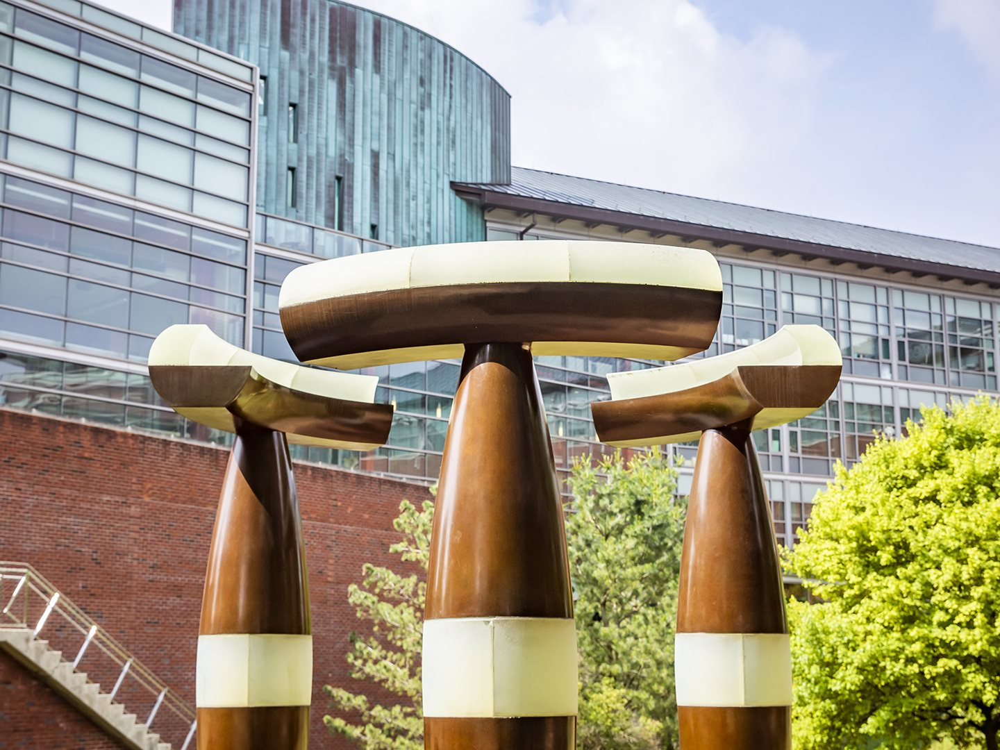
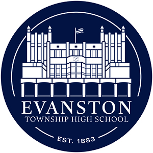

University of Illinois Urbana-Champaign (UIUC)

I'm currently a Computer Science major at UIUC.
I'm honored to be a James Scholar, Matthews Scholar, and National Merit Scholar.
- Expected graduation: Spring 2028 | Cumulative GPA: 3.93
- Relevant coursework: Calculus, intro to CS I & II, Statistics for CS, Linear Algebra with Computational Applications, and Data Structures.
- Extracurriculars: Professional Chair of Alpha Omega Epsilon (STEM sorority) and Grainger Career Scholar.
Evanston Township High School

I attended Evanston Township High School from 2020 to 2024.
Unweighted GPA: 4.0 | SAT: 1590
- Leadership: President of Girls Who Code, President of the Animal Welfare Club, Captain of the Quizbowl team, and Co-chair for a leadership-through-service program.
- Involvement: Intern at the school computer center, and active member of the coding club, community service club, math team, and library advisory board.